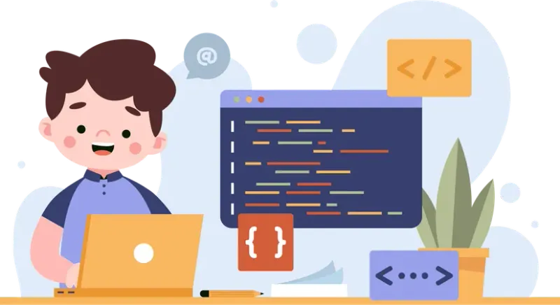

Essential Skills to Build Early
To succeed in computer science, it's important to build essential skills early. Start by learning the basics of programming in languages like Python, Java, or C++, depending on your school's focus. Strengthen your problem-solving and logic by working through puzzles and beginner-friendly coding challenges. Finally, develop a strong foundation in math—especially discrete math, linear algebra, and probability—as these areas are directly applied in many computer science concepts.
College Search
When planning for a computer science degree, take time to research colleges that best match your goals and learning style. Look into each school's CS curriculum, the availability of research opportunities, and access to internships or industry connections. Consider class sizes, faculty expertise, and the support offered through tutoring and career centers. Also, weigh practical factors like location, cost, and campus culture to ensure you'll thrive both academically and personally.
Create Good Habits
Strong study habits and practice outside class are key in computer science. Break problems into smaller steps, write clear, well-documented code, and collaborate with integrity. Balance coursework with side projects, and look for opportunities to grow through coding clubs, hackathons, open-source contributions, or personal projects like a website or game.
